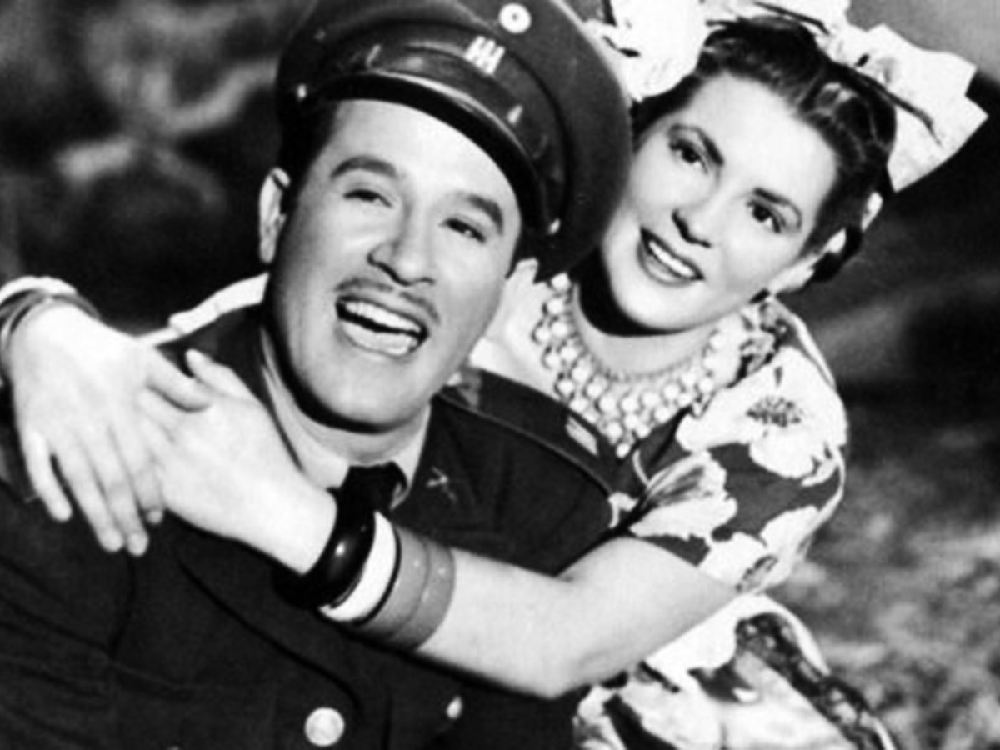
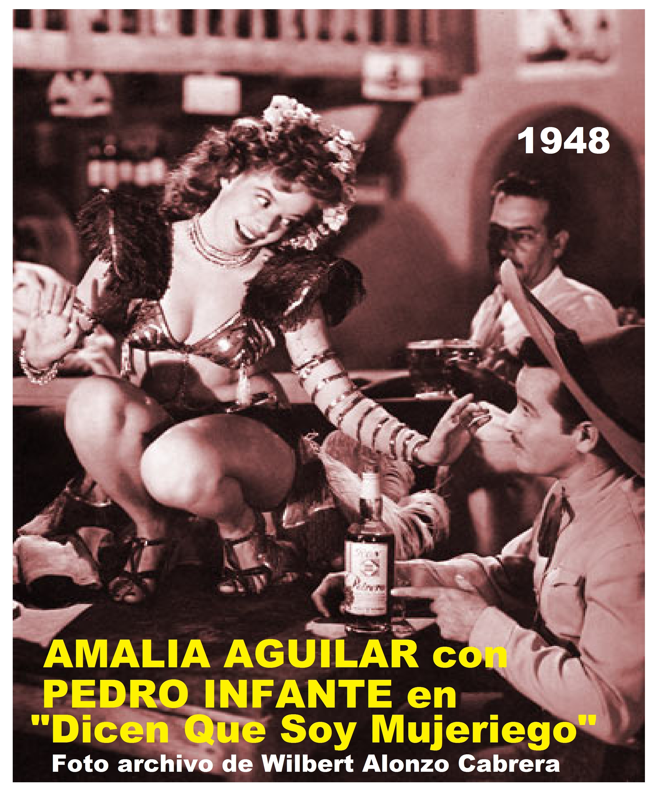
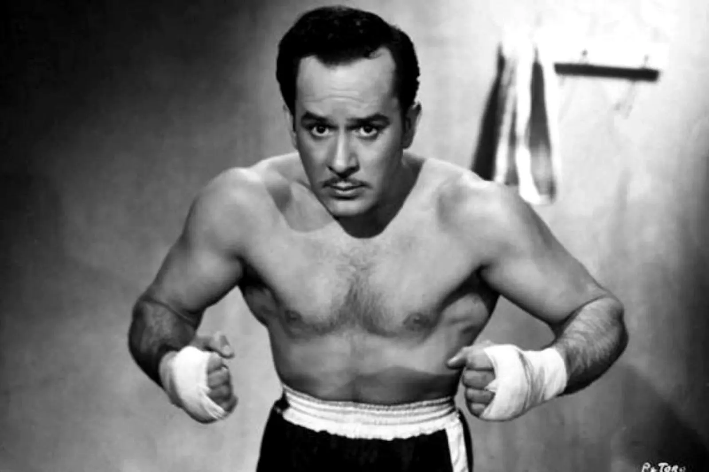
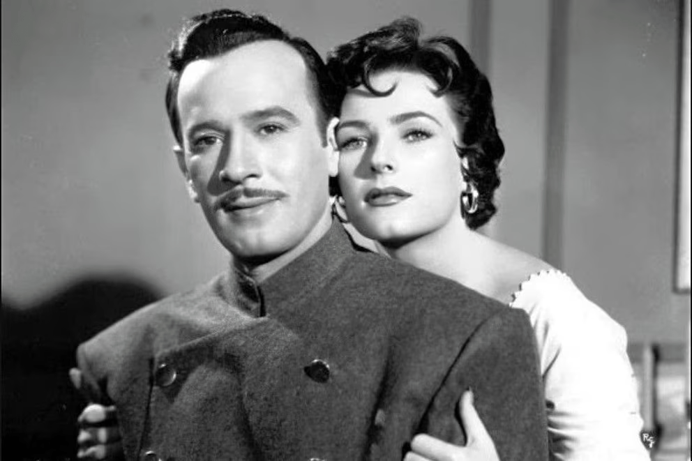
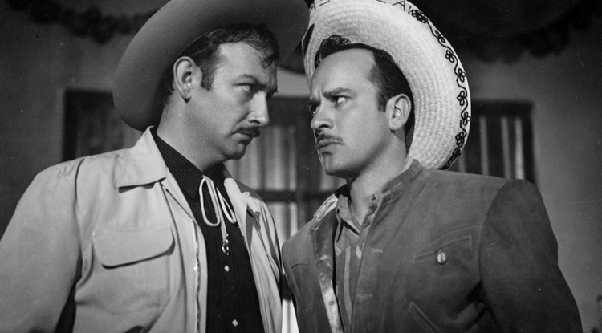
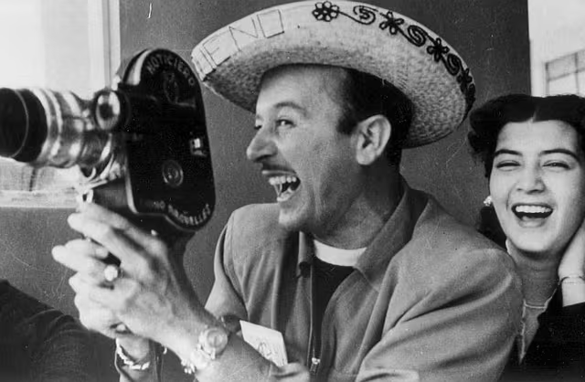

My Skills
My musical skills
I'm a recognized Rancheras singer, with a Baritono voice. Made in the most humble environments, I really enjoy sing to the people and perform different types of musical acts. Also, I play guitar complementing my skills.

Also... I'm an actor
In my acting career, I've performed near of 60 movies, all recorded in the "Golden Years" in the Mexican cinema, between 1939 and 1958. I've learn to act with the best actors, and I'm constantly learning!
My awards
Some of my best moments




